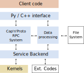

Architecture
Client code (Python)
This is what most end users of the library see most of the time. This code is a set of thin frontend wrappers providing a conveniently usable frontend for researchers to use. It is written in Python so that it can be conveniently read by most researchers, but serves only to interface with some Python-side libraries (netCDF4, PyVista, …) and to delegate calls to the C++ interface library.
Python / C++ interface (C++)
The majority of the FusionSC toolkit is written in C++, both for its superior performance and the stricter nature of ahead of time static compilation. The python interface library performs important tasks for tying these two worlds together:
Binding of C++ classes, methods, and functions: There are a substantial number of classes - most importantly Cap’n’proto root types - that need to be exposed as Python counterparts. These are exposed to the python- side code using pybind11 via the fusionsc.native C extension that is then imported on the python side.
Exposure of the service interface: While there are important statically compiled components, operation of the FusionSC library revolves around the usage of Cap’n’proto objects making up the majority of the service interface. A large portion of the library is dedicated to the dynamic generation of python types from Cap’n’proto schemas that can be used to access the structured data embedded in Cap’n’proto messages and to call methods on capabilities. The generated interfaces are exposed in the module fusionsc.service.
Conversion between the C++ and Python world: The interface implements several conversions to map structured binary data to lists, dicts, NumPy tensors, and YAML strings. This ensures that the used data classes can be transparently assigned to and from such types, even though internally they use Cap’n’proto’s wire representation.
Management of the global context: The FusionSC C++ library is designed without the usage of any global singleton. The library root context is managed as a C++ object which is then manually associated with every thread. The per-thread association ensures that multiple instance of the library can run side-by-side inside a single server process without any cross interference. However, this makes usage from Python inconvenient and also offers little gain there, since Python interpreters have a lot of global state anyway.
Therefore, this library creates and manages an implicit execution context, and also instantiates a local service backend to be used as a default by requests. This also includes the management of an event loop. The C++ and asyncio event loops are mutually integrated. However, for this to work properly, we required nested asyncio loops.
Cap’n’proto RPC system (C++, but other implementations exist)
Cap’n’proto forms the foundation upon which the service infrastructure is built. The following infrastructure of Cap’n’proto is used by FusionSC:
“Zero-copy” serialization: Cap’n’proto defines a format for serialization and deserialization. Structures are assembled and read in memory directly in the wire format, which eliminates most of the parsing overhead often required to read messages from the wire or from files. Wherever possible, for archives, structured data (such as magnetic fields, meshes, coils, etc.), transfer of structured data to devices like GPUS, etc., this format is used.
Furthermore, the format is designed with forward compatibility in mind. Structures contain the minimum amount of information neccessary to make deep copies without the schema information, and the data portion occupied by older protocol versions remains identical in newer versions of the structures. Therefore, older code versions can safely transfer, copy, and interpret, data generated by newer code versions, and the same is true in the other direction. While not so important for in-memory storage, these cross-version compatibility guarantees are extremely important for file storage and network protocols.
The storage format is machine-independent. Integers are serialized in little-endian representation, but on big-endian machines the Cap’n’proto implementation performs the neccessary byte swaps (usually using fast intrinsics provided as a machine code instruction).
Capability-based Remote Procedure Calls (RPC): Most webservices systems implement a simple request-response model, in which clients make independent calls to a server, kick off certain processes, and in the end receive an associated call result. This model is simple to implement, but very restrictive if it involves the management of long-running processes and persistent resources (such as large data collections that could be shared between runs). In a capability-based RPC system, connected peers can exchange handles to individual objects (called “capabilities”) and make call requests to these objects. The capabilities are kept alive until all references on the other end of the connection are dropped.
In Cap’n’proto, the exchange of capabilities is implemented by allowing capability references to be embedded directly inside structures (and therefore the messages exchanged by network requests). Every message container maintains a capability table that associates integer identifiers with individual local or remote object instances. These identifiers are then references in the wire representation of the message. When the message is transferred to a network connection, local capabilities are automatically exposed to the remote end, while the remote end also unwraps any references pointing to its own capabilities upon receipt.
Capabilities represent callable objects, which means that they generally can not be serialized to disk. The capability identifiers referenced in messages is written out alongside other information, but upon loading of the data, the referenced capability table must be restored by other means (see the description of the data module).
The Cap’n’proto message system supports the notion of ‘pipelining’. Taking advantage of the already asynchronous nature of a call, call requests can not only be made to capabilities returned by earlier calls, but also to capabilities expected to be returned in the future. This “ahead of time” call mechanism eliminates unneccessary network latency waits and allows references to future call results to be made.
A schema language for the service interface: The binary representation, the network protocol, and the capability call interfaces are derived from a textual schema representation, which statically typed and compiled into the C++ library (from which the C++/Python interface library then generates appropriate Python types).
Data processing (C++)
A very common issue encountered during fieldline tracing, equlibrium calculations, etc., is that individual tasks are small, but involve accessing gigabyte-sized datasets. To optimize the handling of these large datasets, FusionSC introduces the concept of a “DataRef”, a capability that acts as a reference to stored binary immutable data. A DataRef provides the facilities to stream the underlying data to a remote client, identify the type of the stored data, a hash for deduplication, and a list of capabilities to be associated with the data.
Usually, the data are stored in the form of a Cap’n’proto message, and the capability links are used to fill in the message’s capability table. However, this interpretation is not required, and arbitrary binary data can be stored (e.g. images of binary files such as NetCDF files).
Each instance of the FusionSC library (so one process-wide instance if used from Python) maintains a hash-based index of all currently in use data pieces, which eliminates the need for any large-scale data exchange within a single process. If neccessary, DataRefs are materialized in system memory, but this is strictly an on-demand operation. As a capability, are passed by reference to remote peers and can be proxied across multiple connection hops. Besides eliminating duplicate data transfer, this also eliminates the need to download and reupload results produced and consumed only on the server side. Additionally, call pipelining allows the results of yet-to-complete calculations to be used as arguments for other tasks, which will then suspend once they need to materialize the results of the active calculations.
The data handling facilities of FusionSC are aware of the special ‘data as capability’ nature of a DataRef. When storing structured data to disk, directly and indirectly referenced data are saved as well. The most convenient method for local storage is the usage of a ‘data archive’, which contains a complete tree of associated DataRefs. Upon loading, the referenced data are mapped directly to system memory, which means that the operating system will only load the stored data from disk if the contained memory is actually accessed. This permits trees of linked DataRefs that exceed even the main memory size of a single host machine. Stored memory pages can be evicted from main memory as needed, since they can always be restored from the file system on demand.
Service implementation (C++)
The main client-side interface to FusionSC is its implementation of the RPC service. The actual service interface is defined in the *.capnp files located in the src/service directory. Most of FusionSC’s functionality (except the side-channel formed by the shared data store mentioned above) can be accessed through these services. Two service interfaces are of particular importance:
The RootService interface is the entry point for remote clients intended to be shared across a network connection. This interface provides access to the various scientific processes, including field line tracing, magnetic field calculation, synthetic heat flux calculations, and the scheduling of equilibrium calculations (to be implemented). Additionally, the default implementation also manages a single thread pool or CUDA context to be used by all computation kernels.
The LocalResources interface provides privileged access to local machine resources. It can be used to write and open archive files, establish connections with or listen for connections from other nodes, and download files into the machine’s main memory (RAM), and create instances of the RootService implementation. For security reasons, calls to this interface can not be made over remote connections.
Kernels (C++ / CUDA)
Several core functionalities, several of which can be well parallelized, are directly implemented in FusionSC (as opposed to relying on external codes), most importantly the field line tracing / diffusion and the Biot Savart calculations. To take advantage of the inherent parallelism, these operations are implemented in the form of CUDA kernels. The data exchange between the managing host process and the device kernels is handled in the form of Cap’n’proto messages and Eigen tensors.